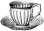

Рецепты напитков и кулинарных изделий из какао-бобов, какао-масла и какао-порошка .


Какао тертое – 3 части
Масло какао – 30 граммов
Молоко – 1 стакан
Сахарная пудра или сахар
Масло какао и тертое какао нагреть в микроволновой печи или на водяной бане. Помешивая, осторожно добавить в шоколад кипяченое молоко и довести смесь до нужной вам консистенции. В конце процесса добавить по вкусу сахарную пудру или сахарный песок и вновь размешать. Напиток готов. Корицу и другие специи можете добавить по желанию.
Очищенные какао-бобы – 200–300 граммов
Мед – 200–300 граммов
Корица – 20–30 граммов
Ваниль стручковая – 1 штука
Перец чили, имбирь, цветы (лотоса, розы и т. д.), морская соль – по вкусу
Напиток чоколатль готовят поэтапно. Первый этап – подготовка какао-бобов. После промывки в теплой воде нужно оставить бобы какао на 5—10 минут в небольшом количестве воды для размягчения кожуры. После просушки и обжарки на сковороде удалите с бобов кожуру. Затем смешайте мед с приготовленными заранее специями. Засахарившийся мед нужно подогреть. Густота меда должна соответствовать консистенции сиропа. Ваниль добавляйте всегда в самом конце, так как она не любит нагрева.
Измельчите какао-бобы в кофемолке в порошок. На теплую сковороду высыпьте порошок какао и, постоянно перемешивая, равномерно нагрейте. При помощи пестика растирайте порошок по дну сковороды, причем не прекращайте это делать и после снятия сковороды с огня. Ваша задача – выделить как можно больше какао-масла. Добавьте в сковороду смесь специй и меда и продолжайте растирать получившуюся шоколадную массу. Чем дольше вы растираете продукт, тем вкуснее будет ваш напиток. Основа для напитка готова – выпарите ее до густоты теста и поместите в закрытую емкость, лишив доступа воздуха.
Вновь берем сковороду, нагреваем ее и вливаем воду, из расчета 1 кружка на одного человека. Оптимальная температура добавляемой воды составляет 50–60 °C. В воде растворяем подготовленную основу для напитка и полученную массу взбиваем венчиком или миксером.
Бобы какао – 100 граммов
Стручковая ваниль – 1 стручок
Перец чили – 2 стручка
Миндаль – 12 штук
Фундук – 12 штук
Сахарный песок – 45 граммов
Анис – по вкусу
Какао-бобы необходимо обжарить и измельчить в мелкий порошок, в который добавить перец, анис, стручок ванили, орехи и сахар. Все перемешать и при необходимости измельчить. Полученную смесь залить кипятком и настоять в течение нескольких часов. Процедить и взбить венчиком.
Горький шоколад – 1 плитка
Ванильное мороженое – 2–3 шарика
Молоко цельное – 2 стакана
Измельченную в кофемолке плитку шоколада взбить в блендере с ванильным мороженым и молоком. Коктейль рекомендуется употреблять сразу после приготовления.
Какао-бобы – 50 граммов
Кедровые орехи (или кунжут) – 15 граммов
Какао-масло – 15 граммов
Мед – 1 столовая ложка
Банан – 1 штука
Холодная вода – 300 граммов
Теплая вода (75 °C) – 100 граммов
Измельченные в кофемолке какао-бобы и кедровые орехи перемешиваем в блендере с водой, медом и бананом. После получения густой однородной консистенции добавляем какао-масло и теплую воду. Смешиваем напиток до готовности вновь в течение 3–5 минут.
Какао-бобы – 50 граммов
Мед – 15 граммов
Перепелиные яйца – 10 штук
В блендере смешать 10 сырых перепелиных яиц и предварительно измельченных какао-бобов, добавить мед. Вновь перемешать в течение 2–3 минут, и коктейль готов.
Стручковая ваниль – 2 стручка
Тертые бобы какао – 3 столовые ложки
Вода – 200 граммов
Черный молотый перец – 1 столовая ложка
Мед – по вкусу
Тертое какао высыпать в кипящую воду, добавить ваниль, перец и перемешать. Мед добавляем по вкусу. Шоколад подается к столу жидким и охлажденным.

Кокос – 1 штука
Банан – 1 штука
Какао-бобы – 1 столовая ложка
Для изготовления напитка лучше всего взять молодой кокосовый орех – нам понадобятся его сок и мякоть. Какао-бобы предварительно измельчите в кофемолке. Ингредиенты смешать в блендере, добавив для вкуса ягоды или орехи.
ШОКОЛАДНО-ЯГОДНЫЙ СМУЗИ
Молоко – 1 стакан
Черника – 1/2 стакана
Клубника – 1/2 стакана
Банан – 1/2 штуки
Какао-порошок – 2 чайные ложки
Мед – 1 чайная ложка
Для приготовления этого богатого антиоксидантами напитка можно использовать как свежие, так и замороженные ягоды. В блендер налейте молоко из расчета один стакан – одна порция. В молоко добавьте банан, клубнику и чернику и все хорошо перемешайте. Во время перемешивания добавьте какао-порошок и мед. Какао-порошок можно заменить измельченным горьким шоколадом.
ШОКОЛАДНО-БАНАНОВЫЙ ШЕЙК
Банан – 2 штуки
Какао-порошок – 2 чайные ложки
Миндальное молоко – 2 стакана
Молотая корица – / чайной ложки
Листья мяты – для украшения
В шейкере смешать банан, порошок какао, миндальное молоко и корицу. Использовать мяту для украшения разлитого по стаканам напитка.
ДОМАШНИЙ ШОКОЛАД
Какао (тертое, прессованное) – 250 граммов
Масло какао – 75 граммов
Мед или сироп из топинамбура – 100 граммов
Тертое какао смешать с какао-маслом и нагреть в микроволновой печи или на водяной бане. В горячий шоколад добавить мед или сироп топинамбура, а также по желанию дополнительные наполнители: ваниль, перец чили или кайенский перец в порошке, орехи, ягоды годжи. Готовую смесь разлить в формы, и после остывания шоколад готов.
ДОМАШНИЙ ШОКОЛАД С КОКОСОВЫМ МАСЛОМ
Какао тертое – 100 граммов
Какао-масло – 300 граммов
Сгущенное молоко – 1 чайная ложка
Кокосовое масло – 50 граммов
Какао тертое перемешиваем с маслом какао и, поместив в водяную баню, добавляем кокосовое масло. Хорошо перемешиваем до образования однородной массы. Добавляем в шоколад сгущенное молоко и любые наполнители по вашему желанию – сухофрукты, орехи, цедру и другое. Массу вновь перемешиваем, разливаем в заранее приготовленные формы и помещаем в холодильник или холодное место до полного затвердевания.
ШОКОЛАД «ЖИВОЕ КАКАО»
Какао-бобы – 50 граммов
Какао-масло – 30 граммов
Мед – / столовой ложки
Ваниль – / стручка
Перец чили – на кончике ножа
Какао-бобы измельчаем до мелкого порошка и нагреваем в микроволновой печи или на водяной бане, добавив какао-масло. Перемешивая образовавшуюся шоколадную массу, добавим мед, перец и измельченную ваниль. Готовый продукт разлить по формам и дать остыть.
СЫРОЙ ШОКОЛАД ИЗ КАКАО-БОБОВ
Кокосовая стружка – 1 стакан
Кокосовое масло – 1 стакан
Какао-порошок – 1 стакан
Масло какао – 8 столовых ложек
Мед – 10 столовых ложек
Кунжут, изюм и орехи – по вкусу
Какао-порошок смешать с маслом какао и добавить кокосовое масло, мед и наполнители (орехи, изюм и кунжут). Тщательно перемешать до образования густой однородной массы. Добавить кокосовую стружку.
КОНФЕТЫ ИЗ СЫРЫХ КАКАО-БОБОВ
Бобы какао – 500 граммов
Какао-масло – 150 граммов
Мед – 200 граммов
Стручковая ваниль – 1–2 стручка
Цедра апельсина или лимона, кунжут, курага, изюм – по вкусу
Измельченные какао-бобы и ваниль смешать, добавив какао-масло и мед. Образовавшейся шоколадной смесью залить цедру, кунжут, курагу и изюм и дать затвердеть. Конфеты готовы.
ШОКОЛАДНЫЕ ТРЮФЕЛИ
Овсяные хлопья – / стакана
Кокосовая стружка – 2 столовые ложки
Сырые какао-бобы – 20 граммов
Финики – 5 штук
Кокосовое масло – 2 столовые ложки
Мед – 2 столовые ложки
Какао-бобы и овсяные хлопья измельчить в порошок, финики мелко нарезать – все это перемешать и добавить кокосовое масло и мед. Все хорошо перемешать до образования однородной густой массы. Сформировать руками небольшие шарики и обсыпать их кокосовой стружкой. Натуральный продукт из какао-бобов готов.
ШОКОЛАДНО-АПЕЛЬСИНОВЫЕ ТРЮФЕЛИ
Какао-бобы (сырые, молотые) – 1 столовая ложка
Овсяные хлопья – / стакана
Финики – 5 штук
Кокосовое масло – 2 столовые ложки
Кокосовая стружка – 2 столовые ложки
Апельсиновая цедра – 1 столовая ложка
Сироп топинамбура – 2 столовые ложки
Кардамон – 0,2 грамма
В кухонном комбайне смешайте овсяные хлопья, финики и апельсиновую цедру. В отдельной емкости смешайте кокосовое масло, сироп топинамбура и кардамон, а затем добавьте смесь в комбайн, к сухим ингредиентам. Взбивайте все в течение одной минуты. Из полученной массы скатайте небольшие шарики, обсыпьте их молотыми какао-бобами и кокосовой стружкой и поместите в холодное место для затвердевания. Хранить готовые трюфели рекомендуется в холодильнике.
ШОКОЛАДНЫЕ ПИРОЖНЫЕ С АПЕЛЬСИНОМ И СЫРЫМИ КАКАО-БОБАМИ
Какао-бобы – 50 граммов
Кокосовая стружка – 150 граммов
Мед – 10 граммов
Мандарин – 1 штука
Апельсин – 1 штука
После измельчения всех ингредиентов из шоколадно-мандариновой массы слепите шарики. Апельсин разрезать кружками, на каждый кружок положить шоколадно-мандариновый шарик и полить медом. Если ваш мед засахарился, растопите его в водяной бане или микроволновой печи.
ШОКОЛАДНО-СЛИВОЧНЫЙ ДЕСЕРТ
Горячий шоколад – 1 стакан
Агар-агар – 2–3 чайные ложки
Сметана или жирные сливки – 3–4 столовые ложки
Мука из грецких орехов – 5–6 столовых ложек
Кисло-сладкий джем или сироп – 5–6 столовых ложек
Горький шоколад – 20 граммов
Свежие листья мяты – для украшения
Горячий шоколад смешать со сметаной, добавить агар-агар и муку и все хорошо перемешать. Полученную массу выложить в форму и украсить джемом, измельченным горьким шоколадом и листьями мяты.
ЛЕПЕШКИ С БАНАНОМ И КАКАО
Банан – 1 штука
Кленовый сироп – 1 чайная ложка
Кокосовая стружка – / стакана
Кунжутные семечки – 1 столовая ложка
Льняная мука – 1 столовая ложка
Мука измельченных грецких орехов – / стакана
Корица – / чайной ложки
Какао-бобы – 50 граммов
Банан с сиропом взбить в миксере до получения однородной массы, в которую добавить остальные ингредиенты, за исключением какао-бобов. Все тщательно перемешать. Добавьте измельченные какао-бобы. Сформируйте лепешки, выложите на противень и выпекайте до готовности в печи или жарьте на сковороде.
ПИРОЖНЫЕ С МИНДАЛЕМ И КАКАО
Пшеничная мука – 3 стакана
Какао-порошок – 1 стакан
Какао-бобы – / стакана
Сахар – / стакана
Молоко – 3 стакана
Шоколад – большая плитка
Пищевая сода – 1 столовая ложка
Соль – 2 чайные ложки
Ванильная эссенция – 10 капель
Яблочное пюре – / стакана
Яблочный уксус – 2 столовые ложки
Мякоть кокоса – 1 стакан
Орехи – 1 стакан
Клубника, шоколадная стружка – по вкусу Разогрейте печь до 165 °C. Все ингредиенты, кроме сухих, смешайте в одну массу. Добавьте сухие ингредиенты и хорошо перемешайте. Выложите массу в формы для выпекания пирожных и поместите в печь. По готовности выньте пирожные и охладите перед нанесением шоколадной глазури, клубники и шоколадной стружки.
ИЗРАИЛЬСКИЙ ШОКОЛАДНЫЙ – ПИРОГ ИЗ АВОКАДО
Авокадо – 1 штука
Апельсин – 2 штуки
Какао-порошок – 3 столовых ложки
Мед – по вкусу
Дробленые какао-бобы – 50 граммов
Очищаем авокадо от кожуры и помещаем его в измельчитель, добавляем разрезанный на дольки апельсин (с кожурой) и перемалываем фрукты. В эту фруктовую кашицу добавляем порошок какао и мед, вновь все перемешиваем. Получившуюся массу выкладываем в форму и посыпаем дроблеными какао-бобами. Торт помещается в морозильное отделение холодильника на 1 час.
ШОКОЛАДНЫЕ БРАУНИ
Финики – / стакана
Сушеная вишня или изюм – / стакана
Какао-бобы – / стакана
Грецкие орехи – 1 стакан
Мед – 3 столовые ложки
Какао-бобы предварительно измельчить в кофемолке. Ингредиенты смешать в шейкере и измельчить их. Массу выложить в приготовленную форму, тщательно утрамбовать и поставить в морозильное отделение холодильника на 1 час. Хранить в холодильнике.
ДВОЙНЫЕ ШОКОЛАДНЫЕ БРАУНИ
Мука – / стакана
Сахар – / стакана
Масло сливочное – 50 граммов
Шоколад молочный – 200 граммов
Молоко сгущенное – 400 граммов
Какао-порошок – / стакана
Яйцо куриное – 1 штука
Сахар ванильный – 1 пакетик
Разрыхлитель – / чайной ложки
Фундук – / стакана
Выложить форму размером примерно 30x22 сантиметров бумагой для выпечки. Бумагу смазать растопленным сливочным маслом. Шоколад наломать кусочками, фундук порубить. Смешать сахар с мукой и добавить холодное сливочное масло. Выложить на дно формы, сформировать корж. Выпекать 15 минут в разогретой до 180 °C духовке.
Смешать сгущенное молоко, какао и яйцо с оставшейся мукой, ванильным сахаром и разрыхлителем, добавив кусочки шоколада и фундук. Распределить шоколадную массу по подготовленному коржу. Выпекать 20 минут. После – охладить и разрезать на части.
ДВУХСЛОЙНЫЙ ТОРТ С КАКАО
Какао-бобы – 50 граммов
Семена подсолнечника (сырые) – 200 граммов
Курага – 50 граммов
Кокосовая стружка – 100 граммов
Мед – 30 граммов
Фрукты и ягоды – по вкусу
Так как наш торт состоит из двух слоев, то его готовят поэтапно.
Первый слой: семена подсолнечника и курагу перемолоть в блендере с добавлением небольшого количества воды. Добавить мед. Полученную массу разложить на блюде в той форме, в которой вы предполагаете сделать торт. Второй слой: кокосовую стружку смешать с какао-бобами, добавив не менее 20 граммов меда. Все это перемолоть в блендере, а полученную массу разложить поверх первого слоя. Торт готов! Его можно украсить дольками фруктов или ягодами.
ШОКОЛАДНЫЙ МУСС
Темный шоколад – 200 граммов
Сливочное масло – 30 граммов
Яйца – 3 штуки
Сгущенные сливки – 300 миллилитров
Какао-бобы – 50 граммов
На водяной бане или в микроволновой печи растопите шоколад и масло, перемешивая их до полного растворения. Подготовьте три яичных желтка, добавьте их в массу и, перемешивая, дайте остыть. Затем добавьте взбитые сгущенные сливки, медленно вливая и помешивая. Взбейте белки до загустения и добавьте их в шоколадную массу. Готовый мусс можно украсить дроблеными какао-бобами.
ФОНДЮ
Горький шоколад – 2 большие плитки
Молоко – 1 стакан
Клубника – / стакана
Банан – / стакана
Мандарин – 1 штука
Апельсин – 1 штука
На водяной бане или в микроволновой печи растопите шоколад и, помешивая, добавьте в него горячее молоко. В шоколадную смесь добавьте предварительно нарезанные кубиками фрукты. Перемешайте. Подавать фондю следует в горячем виде и употреблять с зеленым чаем.
ШОКОЛАДНЫЙ СОУС
Миндальное молоко – 1 стакан
Какао порошок – 60 граммов
Дробленые какао-бобы – / стакана
Сироп топинамбура – / стакана
Ванильная вода – / стакана
Финиковая паста – 115 граммов
Морская соль – / чайной ложки Измельчаем в блендере все ингредиенты до получения густой массы, которую переливаем в контейнер и помещаем в холодильник или начинаем использовать для украшения кондитерских изделий.
ФИНИКИ В ШОКОЛАДЕ
Финики – 50 штук
Бисквитное печенье – 250 граммов
Грецкие орехи – 150 граммов
Сливочное масло – 100 граммов
Темный шоколад – 150 граммов + 200 граммов для глазури
Растительное масло – 2 столовые ложки
Вода и сахар – по необходимости
В небольшое количество воды добавьте несколько ложек сахара и доведите до кипения. В воду добавьте сливочное масло, перемешайте до полного растворения. В отдельной чашке разотрите печенье и орехи. Вылейте воду в печенье и орехи, все хорошо перемешайте. Шоколад растопите в микроволновой печи и добавьте его к печенью и орехам, перемешайте и дайте смеси остыть. Удалите из фиников косточки и заполните их смесью. Подготовьте шоколадную глазурь, смешав предварительно расплавленный в микроволновой печи шоколад с растительным маслом. Готовые финики опускайте в глазурь и выкладывайте на сетку для стекания. Охладите. Финики в шоколаде готовы.
ШОКОЛАДНЫЕ ПАСТИЛКИ ПРИ БОЛЯХ В ГОРЛЕ
Пыльца – 1 чайная ложка
Мед – 2 чайные ложки
Натертый воск – 1,5 чайной ложки
Мелко натертое какао – 4 чайные ложки
Пыльцу необходимо измельчить пестиком или растворить в небольшом количестве воды.
Воск растопить в микроволновой печи или на водяной бане, добавить в него какао и продолжить нагревание. В горячую массу добавить мед с пыльцой, смешав их заранее. Следить, чтобы воск не застыл. После окончательного затвердевания пастилки готовы.